C 同心円（距離指定） (C, C)
ツールバー/アイコン:

メニュー:
D 描画 > C 円 > C 同心円（距離指定） (C, C)
コマンド:
circleconcentric | cc
説明:
このツールで、既存の円への与えられた距離を備えた、1つあるいは多数の同心円を作成することができます。
手順:
オプション・ツールバーにオリジナルの基礎円からの同心円の距離を入力します。
オプション・ツールバーに作成する同心円の数を入力します。
基礎円をクリックします。
同心円は、基礎円をクリックする際に、マウス・カーソルがある側に作成されます。
 


